Integrated Standards Assurance Framework, version 6.0.7. Step-by-step instructions for the ISAF web app hosted by MX Aero: prepare your configuration and download your certification documents.
1. What the web app does
ISAF generates the plans, standards, checklists, records and reports your program needs for certification (DO-178C, DO-254, ARP4754B and related standards) from one configuration workbook. You describe your program once; ISAF fills every document with your company, program, people, items, levels and dates, phase by phase.
Unlock→Program Intake→Config Data→Save workbook→Build→Download ZIP
The web app runs in your browser at the address MX Aero gave you; there is nothing to install. It is licensed to your company: some values (company, program type, authority, certification basis and others) come from your license and are locked, and only the program phases in your license can be built.
ISAF is not a qualified toolISAF is a document generation aid. It is not a qualified tool under DO-178C section 12.2.1 or DO-330, and no certification credit comes from using it. DO-178C requires a tool to be qualified only where its output is not verified; ISAF's output is verified, because you review and approve every document before it becomes life cycle data. That is what keeps ISAF outside the qualification requirement, so the review is not a formality. The cover of every document ISAF generates carries this notice, so a DER or an authority reviewing your data sees it too. ISAF does generate the DO-330 qualification documents (TQP, TOR, TVCP, TVR, TQAS) for your own tools; that is a different thing from ISAF being qualified.
2. Your data in the web app
Nothing is kept on the serverThe web app does not store your workbook or your documents. Save your configuration workbook to your computer whenever you stop working, and download every build. If you close the browser without saving, unsaved changes are lost.
Your workbook is saved on your computer (section 7). Keep it with your program records; it is your program's master data.
Your documents come as a ZIP file that you download after each build (section 11).
Do not enter export-controlled technical data in the web app.
Document control (check-out/check-in, release, baselines and the program document register) is available when ISAF is installed on your company network. Contact MX Aero if you need it.
3. Open the app and enter your access key
Open the web address MX Aero gave you in Chrome, Edge, Safari or Firefox. If the site has not been used for a while, the first page can take up to a minute to appear.
The app is locked until you enter your company's access key. Type it in the Access key box and select Unlock.
When the key is accepted, the yellow box disappears and the app opens with your starter configuration loaded. A wrong key shows "That access key was not accepted. Check it and try again."; check the key with your ISAF administrator.
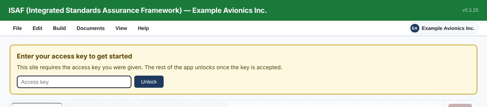
Figure 1. The app is grayed out until the access key is accepted. The File, Help and account menus in the top bar work even while it is locked.
The key is remembered in this browser tabReloading the page does not ask again. On a shared computer, choose Logout… in your account menu (your company name, top right) when you finish.
Login accountsIf your site uses login accounts, it opens with a Sign in to ISAF screen instead of the access key box: enter the username and password you were given, and choose your own password (at least 8 characters) when asked. Your login can be signed in on one computer at a time; signing in elsewhere signs the first computer out. Forgot your password? Ask your ISAF Admin to reset it.
4. The screen at a glance
Banner — your company name and the ISAF version.
Top bar — the menus File, Edit, Build, Documents, View, Tools and Help (User Guide, About) on the left (see "Menus and keyboard shortcuts" below), and on the right your account menu, shown with your name (User Information, User Level, Change Password, Logout).
Main tabs — Program Intake, Config Data, Build, Import, Document PNs, Roadmap and Administration. Reset (right) clears the loaded workbook from the app; it does not delete anything on your computer.
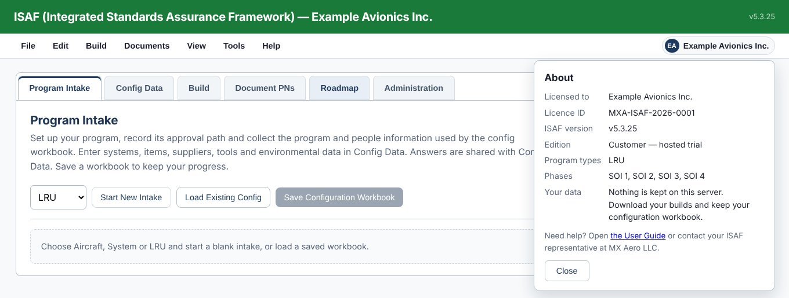
Figure 2. Help → About shows who the app is licensed to, the license ID, the ISAF version, the edition, the licensed program types and phases, and where your data is kept.
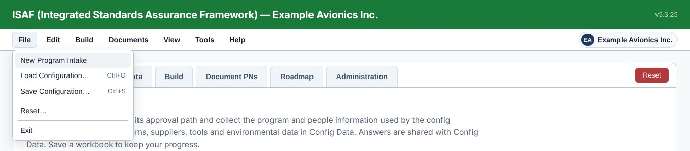
Figure 3. The File menu. New Program Intake asks for the program type (Aircraft, System or LRU) and starts a blank configuration; Load Configuration opens your saved configuration workbook, and Save Configuration saves your changes to a workbook. Exit asks for confirmation, then closes the window (if the browser keeps it open, you can close the tab yourself).
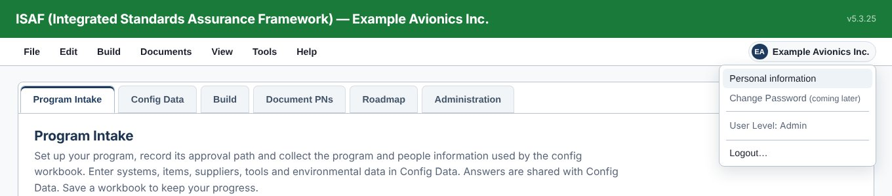
Figure 4. The account menu, shown with your name (or your company name when your app uses a company key). User Information lists your name, company, the Intake Owner of the loaded configuration, your user level and how you sign in. Change Password arrives with individual user accounts; until then everyone is an Admin user. Logout asks for confirmation, then locks the app until the access key is entered again.
Menus and keyboard shortcuts
The menus show only what applies to your app.
Menu
What it contains
File
New Program Intake, Load Configuration, Save Configuration, Reset and Exit.
Edit
Find in Configuration (searches Config Data), Go to Next Missing Field (repeat it to move through every missing field and blocking check) and Discard Unsaved Changes (loads your workbook again without your edits, after asking).
Build
Check Configuration, Build, Working Folder, Reuse Edited Documents and Download Last ZIP (the ZIP of your last build).
Documents
Import Requirements, Document PNs and Roadmap.
View
Build Window (shows or hides the dark build log on the Build tab), Larger Text, Smaller Text, Normal Text Size, and Go to Program Intake, Config Data, Build or Import. Your Build Window and text size choices are remembered in this browser.
Tools
Administration.
Keyboard shortcuts (use ⌘ instead of Ctrl on a Mac): Ctrl+O Load Configuration, Ctrl+S Save Configuration, Ctrl+B Build, F1 User Guide. In a menu, the arrow keys move between items and menus, and Esc closes it.
Every field has a small i button: select it for an explanation of the field and what to enter. Required fields are marked with a red *.
5. Your starter configuration and licensed fields
When the app opens, it loads a starter configuration prepared from your license: company name and address, program type, primary authority, certification regime and basis, DO-160 scope and revision, and requirements tool type.
Licensed fields show (licensed) and are grayed out. They cannot be changed in the app, and editing them in Excel has no effect: the app restores them whenever it loads, saves or builds a workbook.
If a licensed value is wrong, contact MX Aero. MX Aero corrects your license and updates the web app; your saved workbooks keep all your other entries.
Complete everything else, then save it as your own workbook (section 7). From then on, open your own workbook, not the starter.
6. Program Intake, step by step
Program Intake guides you through the program-level questions in three steps. Required fields that are still empty are outlined in red; the red disappears as soon as you fill them. The line under the step tabs counts how many required fields are complete.
Step 1 — Program
Select the Program Intake tab. The starter configuration is already open.
In Company And Program, enter the Company Short Name, Program Name, Program Short Name, the Document Revision and, optionally, CAGE code, document prefix, intake owner and a short product description.
Select Continue. Each step opens at the top of the page.
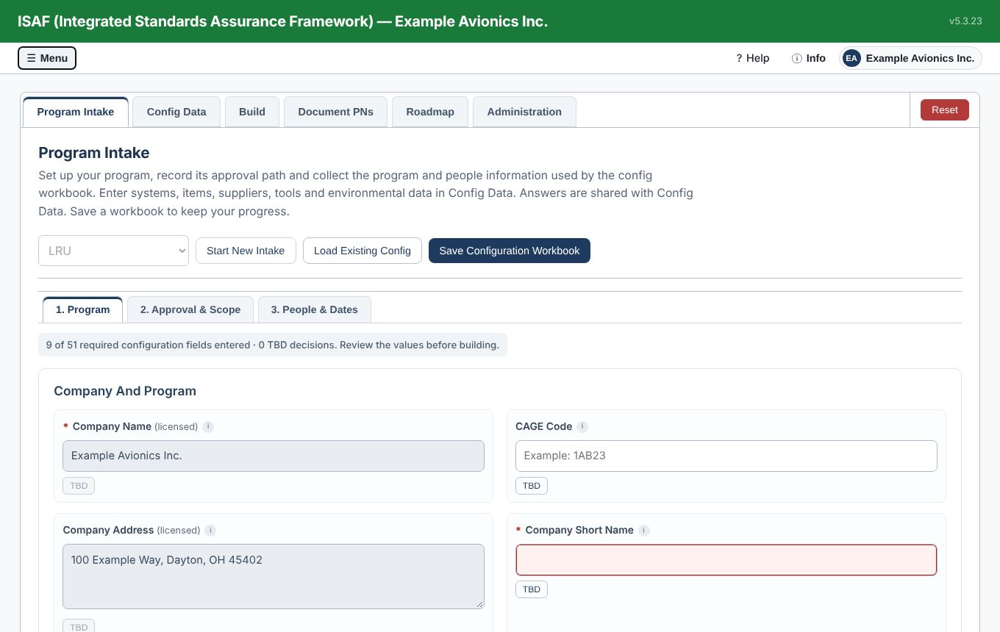
Figure 5. Step 1 — Program. Company Name, Address and Program Type are licensed (gray). Empty required fields are outlined in red.
Step 2 — Approval & Scope
Choose the Approval Path (for example, FAA TSO authorization). Only paths that fit your program type and license can be chosen; others are marked "(not for LRU programs)" or "(not in your license)".
Complete the certification basis: Certification Regulations / Basis, Applicable TSO / ETSO (if no TSO applies, enter Not applicable: followed by the reason), any secondary authority and the authority project reference.
Answer the scope questions: software, hardware, external suppliers and DO-160 in scope; the aircraft and system FHA classifications and failure-condition counts; and whether CCA, ZSA, PRA and DO-254 Appendix B apply.
Enter your primary authority contact and any partnering arrangement, means-of-compliance issues or other issues, then select Continue.
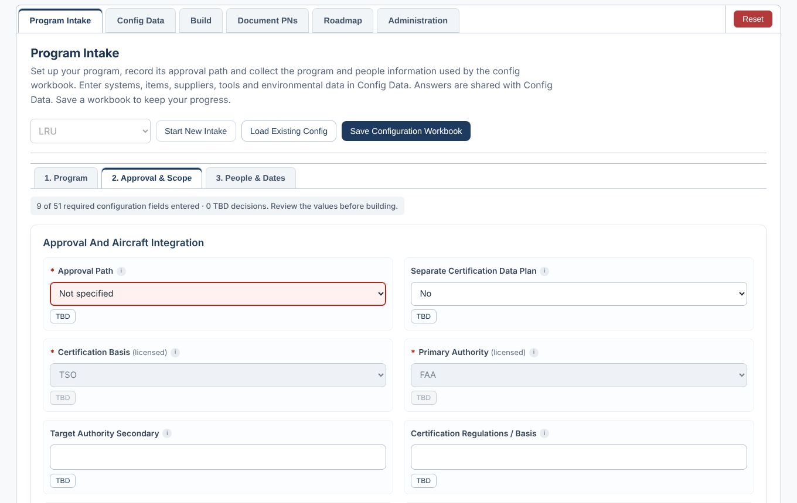
Figure 6. Step 2 — Approval & Scope.
Step 3 — People & Dates
For each of the ten roles (Chief Engineer, Certification Lead, Program Manager, Systems, Safety, Software, Hardware, Process Assurance, Quality and Configuration Manager), enter a name and an email. One person may hold several roles: enter their name and email for each role.
Choose the Independence Mechanism (how process and quality assurance independence is achieved) and describe it.
Enter the target milestone dates, from CoDR to entry into service. If a milestone does not apply, enter Not applicable: and the reason.
Save your workbook now (section 7), then select Continue to Config Data.
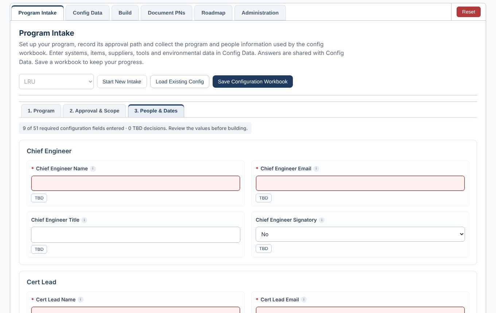
Figure 7. Step 3 — People & Dates.
Not sure yet? Use TBDSelect the TBD button under a field to mark it "to be determined". You can save and come back later. A required field must be resolved before building.
7. Save your configuration workbook
Your answers live only in the browser until you save them. Save every time you stop working.
Select Save Configuration Workbook (in Program Intake or Config Data). In Chrome or Edge it saves over the workbook you opened, with no Save window (the browser may ask once to allow saving to the file).
The first time a workbook is saved (a new intake, or a file opened in Safari or Firefox), a Save window opens in Chrome or Edge; choose a folder and file name and select Save. After that, the button saves over that file. Safari or Firefox: type a file name when asked and select OK; the workbook downloads to your Downloads folder (move it to your program folder). These browsers cannot save over a file, so each save downloads a copy.
To save a new, separate workbook, use File → Save Configuration…, which always asks for a file name.
The app confirms the save. The saved workbook is now the one used by Build, and the server copy is deleted.
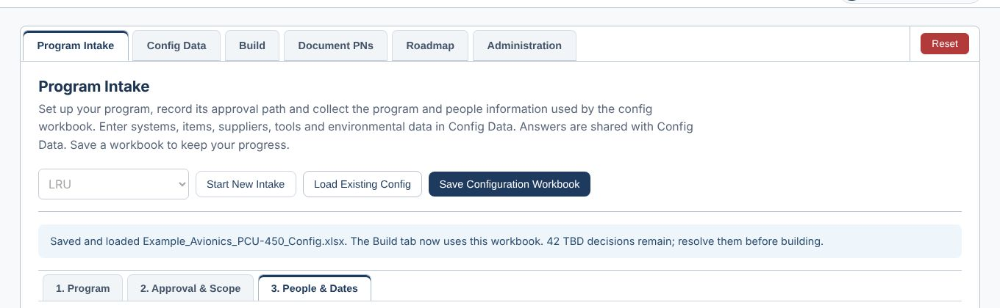
Figure 8. After saving, the app confirms the file name and how many TBD decisions remain.
Use a new file name for each important versionFor example PCU-450_Config_2026-11-05.xlsx. Keep the workbooks with your program records and in your configuration management system.
8. Open your workbook next time
Open the web app and enter your access key (section 3). The starter configuration loads first.
Select the Build tab and drag your saved .xlsx onto the box under "or use your own workbook" (or select the box and choose the file). Load Existing Config in Program Intake does the same.
The box turns green with a ✓ and the file name. Continue in Program Intake or Config Data.
If the box turns redThe message says why the workbook could not be loaded. Check that you chose the .xlsx workbook saved by ISAF and open it again.
9. Config Data: complete every section
Config Data shows the whole configuration, grouped in tabs. Program Intake answers appear here too; change them in either place. Use Search config item to find any field, item, part number or value.
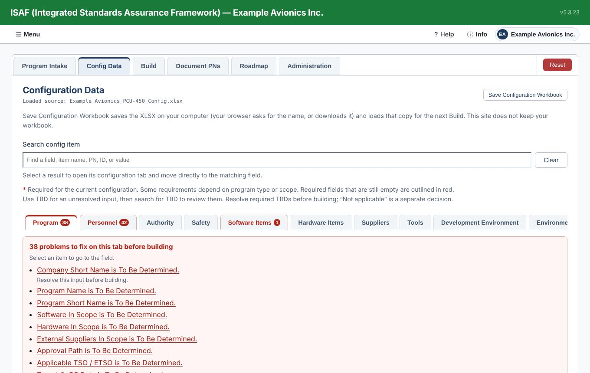
Figure 9. Config Data. Sub-tabs turn red with a count when they contain something to fix.
Tab
What to enter
Program
Program identity, approval, scope, branding and milestone dates (shared with Program Intake).
Personnel
Name, email, title and signatory for each role, and how process and quality assurance independence is achieved.
Authority
Certification authority contacts and coordination details.
Safety
Safety assessment inputs (failure conditions, development assurance levels).
Systems / LRUs
The certifiable units in the program: systems or LRUs in an Aircraft or System program, LRUs in an LRU program. An LRU program may list two or more LRUs that are not part of a system; where more than one unit is listed, every software and hardware item must name its unit in Parent System.
Software Items / Hardware Items
One row per software or hardware item: ID, name, part number, level and related details. Select + Add Item to add an item.
Suppliers / Tools
Suppliers and the tools used, including tool qualification needs.
Development Environment
Requirements, configuration management, problem reporting and other tool types used in your process.
Environmental Evidence / Requirements
DO-160 categories you have qualified to, and the categories your customer requires (when DO-160 is in scope).
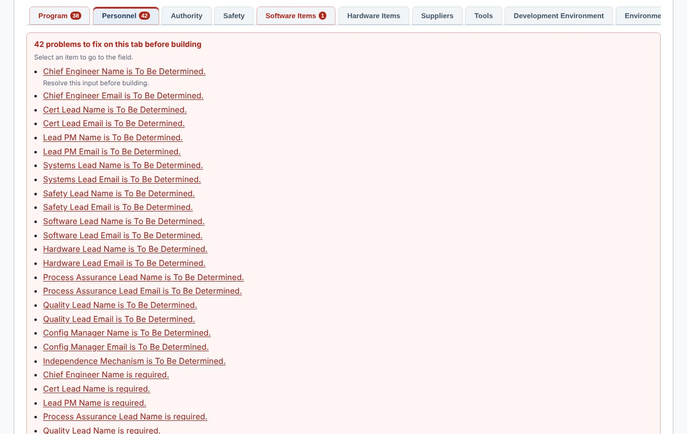
Figure 10. Personnel. The panel at the top of each tab lists what is missing on that tab.
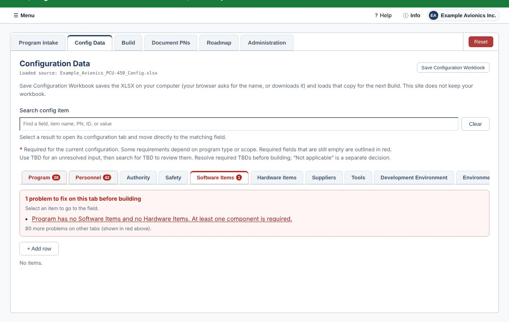
Figure 11. Software Items. When software is in scope but no item exists yet, the panel says so; select the message to jump to + Add Item.
10. Fix problems before you build
ISAF checks your configuration with the same rules the build uses, while you work.
Look at the Config Data sub-tabs. A red tab with a number has problems that block the build; an amber tab has warnings only.
Open a red tab. The panel at the top lists each problem in plain words, with a hint where it helps.
Select a problem. ISAF takes you to the field, highlights it and puts the cursor in it. Fix it; the list updates within a second.
Repeat until no tab is red, then save the workbook (section 7).
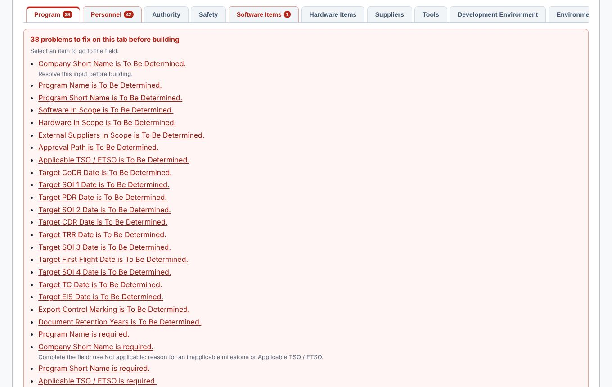
Figure 12. The checks panel. Each line is a link to the field.Figure 13. After selecting a problem, the field is highlighted and ready for input.
WarningsWarnings (amber) do not stop the build. They point to something worth reviewing.
11. Build and download your documents
Select the Build tab. The yellow notice reminds you that nothing is kept on the server.
Check that your saved workbook is shown in the green box (section 8).
Leave Build source on Standard build.
Under Program phases, tick the milestone(s) to build, for example SOI 1. Each phase generates the documents first needed at that gate. All selects every licensed phase. Phases outside your license are grayed out.
Under Program logo, select Choose File and pick your company logo (SVG, PNG or JPEG) if you want it on the documents. The web app cannot read a logo path stored on your computer. The Output folder is not used: documents are delivered as a ZIP download.
Look under the Build button. "✓ Configuration checks passed" means you can build. If it lists problems, select a link to go to the field (section 10).
Select Build. A progress bar and timer show the build running; a one-phase build can take a few minutes. Stop build cancels it.
When the build finishes, the ZIP downloads automatically: one ZIP, with a folder for each phase you built. If it does not start, select Download ZIP (or Download all phases (one ZIP)); the phase buttons download a single phase. Unzip it on your computer: it contains the generated Word documents.
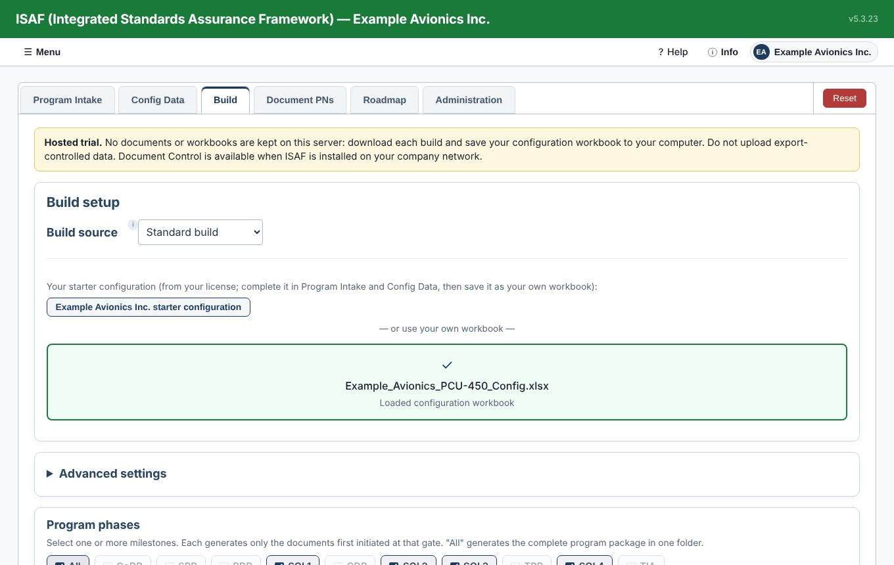
Figure 14. Build tab with the hosted notice and your saved workbook.
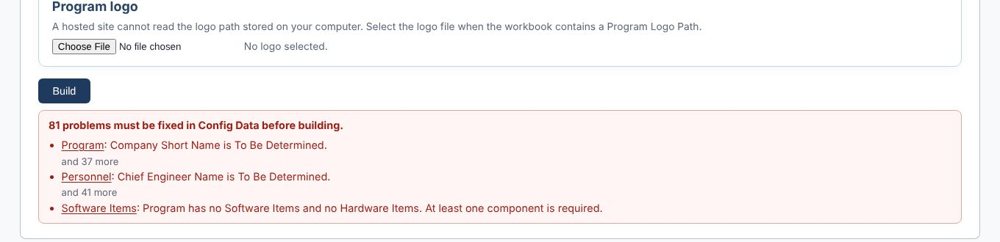
Figure 15. When something must be fixed, the Build tab says so and the build does not start. Each tab name is a link.
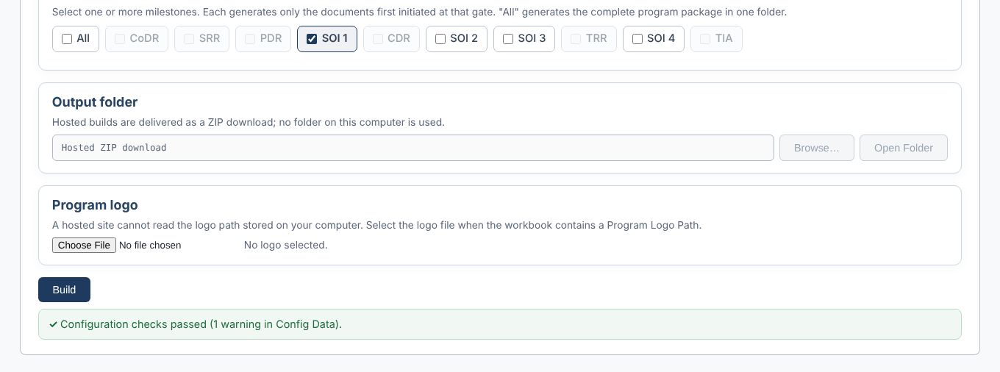
Figure 16. Ready to build: only licensed phases are available, the output is a ZIP download, and checks have passed.
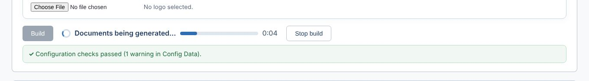
Figure 17. Build running. Stop build appears only while a build runs.
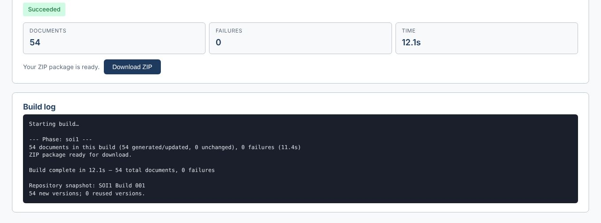
Figure 18. Build complete. The ZIP downloads automatically; finished builds stay on the site for up to 60 minutes and are cleared if the site restarts.
Keep the downloaded ZIPFinished builds stay on the site for up to 60 minutes and are cleared when the site restarts (after an update, or after a period without use). If a download is no longer available, build again. Documents you edit after downloading stay on your computer; to update them after a configuration change, add them under Reuse edited documents (below).
Reuse your edited documents
Use this when you have edited downloaded documents in Word and then change the configuration, or when you start a new program from a previous program's documents.
On the Build tab, under Reuse edited documents, select Choose files… to pick Word documents, or Choose folder… to pick a whole folder, for example your unzipped last build. Only .docx files are used; select either button again to add more, or Clear to start over.
Build as usual. Your documents are sent with the build and matched to the documents it generates: by document number for the same program, or by document type and item for a new program.
In each matched document, the configuration values you did not change are updated: names, part numbers, people, dates and references to other documents. Your own text, tables and formatting are kept.
Where you changed a value and the configuration value has also changed, your text is kept and a Word comment by "ISAF refresh" marks it. Review it, update it if needed and delete the comment.
Download the ZIP. It contains the refreshed documents; each flagged value carries a Word comment. As with every build, nothing is kept on the server.
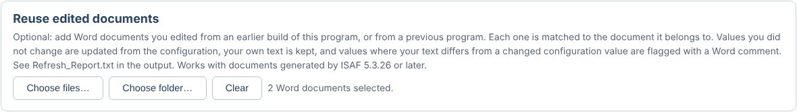
Figure 19. Reuse edited documents on the Build tab.
Good to knowThis works with documents generated by ISAF 5.3.26 or later. New content that has no place in your edited document, such as sections for a newly added item, is not inserted. Build without the documents to get the complete new document to compare.
Work in a folder instead of ZIP files
In Chrome or Edge you can choose a folder on your computer for the program's documents. ISAF then reads your edited documents from it and saves each build into it, so you no longer download and unpack a ZIP after every build.
On the Build tab, under Working folder, select Choose working folder… (or Build → Working Folder…), pick or create a folder, and allow ISAF to view and save files there when the browser asks.
Keep Read edited documents from this folder and save the build into it selected and build as usual. The documents you edited in the folder are reused (see "Reuse your edited documents"), and the new documents are saved into the folder in one subfolder per phase (for example SOI-2).
Before ISAF replaces a file, it copies the previous version to _ISAF_backup in the folder, in a subfolder named with the date and time. A document saved under a new name (for example a new revision) moves the older file there too, so the folder holds one current file per document.
The browser remembers the folder. It may ask again for permission the next time you build. Select Stop using this folder to go back to ZIP downloads.
Good to knowClose documents in Word before building or updating; a file that is open may not be replaced, and ISAF lists it. Other browsers (Safari, Firefox) cannot save into a folder; there ISAF keeps the ZIP download. The folder stays on your computer; nothing is kept on the server.
Import and review requirements
The Import tab checks your requirements before the human review. It eases the manual work of a requirements review; it is not a qualified tool, and the reviewer still performs, completes and signs the review.
Export your requirements from your requirements tool as ReqIF (.reqif or .reqifz, from DOORS, DOORS Next, Polarion, Jama and others), or keep them in Excel (.xlsx) or CSV (any layout: see Connecting your requirements tool for the columns and an example file): system requirements, software high-level and low-level requirements, hardware requirements and verification cases (tests).
On the Import tab (or Documents → Import Requirements…), select Add requirements files…. Each file appears as a card.
Jama Connect and Polarion users can skip the export (see Connecting your requirements tool for everything your tool administrator has to provide): open Read requirements straight from Jama Connect or …from Polarion, enter the service address and the credentials your tool administrator creates (an API client ID and secret for Jama, a personal access token for Polarion; both are shown once), then Test connection, Load projects, tick the item or work item types that hold requirements or verification cases, and Read requirements. Each type becomes a card, with the tool’s own field names as its columns and its links already in place as trace links. ISAF only reads: nothing in your requirements tool is changed. The connection is kept on your own ISAF server and the secret is never shown again.
For each file, check the Level and the columns ISAF has chosen: ID and Requirement text are needed; Traces to (parent IDs), Derived, Rationale and Verification method make the review more complete. For system and hardware requirements, also map Validation method, Validation conclusion, Assumption, Safety-related, DAL and (system) Source of requirement when your export has them; checks that need a column you do not map are skipped or noted once. A ReqIF file with several specifications (modules) gets a level for each. The example line under the card shows how the first requirement is read. Your column choices are remembered in this browser.
Open Review options to match your requirements standard: the list of ambiguous or open terms, the maximum length, and which rules apply.
Select Run review. The results show, per level, how many requirements trace to a parent, are developed further and have tests; the review checklist evidence; and every finding (Error, Warning or Info) with the requirement, its text and the reference of its standard: DO-178C for software, DO-254 for hardware (for example tolerances, validation of derived requirements, safety requirements with a DAL), ARP4754A and ARP4761A for system requirements (for example source identified, tolerances, validation method and conclusion, assumptions, safety requirements allocated with a DAL). The checklist evidence is grouped the same way. Filter by severity, level or text.
Select Download error report (Excel) for the workbook: Summary, Findings (with Disposition and Reviewer notes columns for the review), Requirements, Trace and Checklist evidence.
Using the requirements in your documents. After the review, select Use these requirements in every build. From then on a build writes them into the documents as it generates them — there is nothing to do afterwards. The Build tab says what will be written in before the build starts, and the build log and Requirements_Report.txt say what was:
HLR, LLR, hardware requirements (HRD) and system requirements (REQ-Sys): a requirements table (ID, text, parent, derived, verification method, number of findings) and a table of derived requirements with their rationale and a column for the safety assessment feedback (REQ-Sys: the downward trace).
Trace: the trace matrix (traces to, developed by, verified by) and a gap register with a Disposition column.
SVCP: the imported verification cases and the requirements each verifies.
VMAT-Sys (system validation matrix): the validation matrix (source, DAL, validation method, conclusion; associated function and evidence references for you to complete), the status totals and the open validation findings.
PR-SWRD, PR-SDD, PR-HRD and Sys-SRR review checklists: evidence in the Finding / Notes column of each criterion the data can speak to (for example "2 of 3 software high-level requirements trace to a system requirement; not traced: HLR-3"), and a reminder that judgment criteria are for the reviewer. Pass / Fail / N/A is never ticked.
Check each file's Item: the software or hardware item its requirements belong to (filled in when the program has only one). A ReqIF file with several specifications has an item for each.
Select Use these requirements in every build, then build. A build writes the requirements attached when it ran; ISAF does not re-read your requirements tool during a build.
Import again whenever the requirements change and build again: ISAF replaces the tables and evidence it inserted (marked "ISAF import" in Word) and keeps everything else, including the reviewer's notes next to the evidence. If someone edited an inserted table in Word, it is still replaced, and a Word comment says so; change requirements in the requirements tool.
Good to knowChecklist questions that can be answered from the data (identification, wording, units, verification method, trace) show "No findings" or "Findings" with evidence; questions that need engineering judgment (accuracy, consistency, compatibility with the target, algorithms) are marked "Reviewer". Your files are read on the server and deleted at once; the requirements stay in this browser page only. Do not upload export-controlled data.
12. Document PNs
Document PNs defines how document part numbers are formed: prefix, discipline (SYS/SW/HW), document type code, sequence length and starting number, separator and revision format.
Open Document PNs. The scheme stored in your workbook is shown.
Adjust the settings and the document type codes your company uses. The Live examples show the resulting numbers.
Select Apply scheme to configuration, then Save Configuration Workbook.
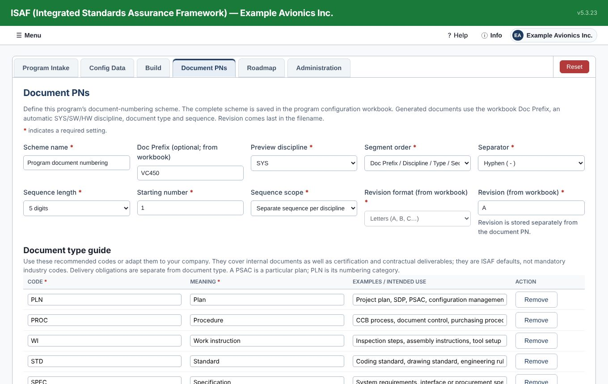
Figure 20. Document PNs.
13. Roadmap and Administration
Roadmap tracks document owners, dates and dependencies through the program document register. The register is part of document control, which is available when ISAF is installed on your company network, so in the web app the Roadmap stays empty.
Administration shows the app edition, hosting mode and recent build activity. Most users do not need it.
14. Changes and new versions
Change your configuration: open your latest workbook (section 8), change it, save it under a new name and build again.
Unsaved changes: if you edit and then select Build, ISAF asks you to save first, so the documents always match a saved workbook.
New ISAF version: MX Aero updates this site for you, including any critical update, so there is nothing to install and no update notice to answer. The new version number appears in the banner. Open your latest workbook as usual; your entries carry over and licensed values are updated automatically.
15. Troubleshooting
What you see
What to do
The site takes a long time to open
The web app sleeps when unused. Wait up to a minute and reload.
"That access key was not accepted"
Check the key with your ISAF administrator. Keys are case-sensitive.
Red tabs, or "problems must be fixed in Config Data before building"
Open each red tab and select each problem to go to the field (section 10).
"Select Save Configuration Workbook before generating documents"
You have unsaved edits. Save the workbook, then build.
"Could not load <file>" on the Build tab
The message gives the reason. Make sure the file is the .xlsx workbook saved by ISAF, then open it again.
"Save canceled" or no file appears after saving
Save again and choose a name; in Safari or Firefox look in your Downloads folder.
A field shows "(licensed)" and cannot be edited
It comes from your license. Contact MX Aero to change it.
A phase is grayed out on the Build tab
It is not in your license.
The build stops with an error or the page reloads during a build
Build again with fewer phases at a time (one phase per build). If it keeps failing, send the message to MX Aero.
Documents have no logo
Choose the logo file under Program logo on the Build tab before building.
16. Getting help
Select the i button next to any field for guidance on that field.
Open Help → About to find your license ID and ISAF version.
Contact your ISAF representative at MX Aero LLC. Include the license ID, the version, what you were doing and the exact message (a screenshot helps).